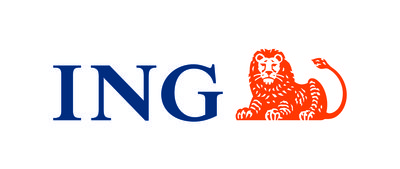
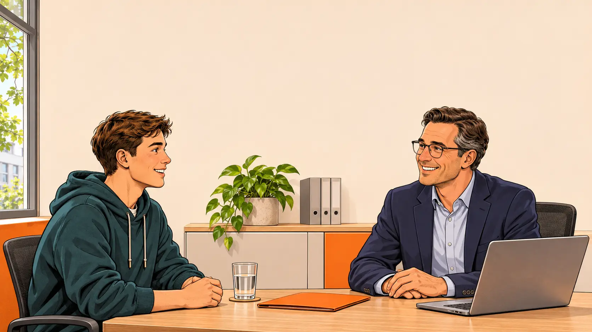

KUNDEN WERBEN KUNDEN
Gute Erfahrungen.
Gern empfohlen.
Lucas, 20 Jahre, möchte einem Freund sein Konto empfehlen.
Lies mit Weiter und Zurück das Gespräch. Frag Bonnie und bearbeite deinen Laufzettel.
0 von 4 Gesprächsschritten entdeckt

EmpfehlungsprogrammFiktives Informationsgespräch
Lucas · Auszubildender, 20 Jahre
Bankmitarbeiter
Unterrichtssimulation · Kein echtes Beratungsgespräch und kein Angebot der ING. Keine Kontoeröffnung, Datenabfrage oder Empfehlung wird ausgeführt. Prämie und Bedingungen: Stand 19.11.2026.